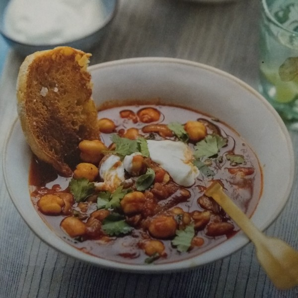

Spiced Moroccan Lentil & Chickpea Soup

Ready in 40 mins.
Serves 2.
Ingredients
- 1 red onion, ½cm half moons
- 1 tin chickpeas, drained and rinsed
- 2 tbsp fresh coriander leaves, roughly chopped
- 1 tbsp fresh coriander stalks, roughly chopped
- olive oil
- 1 tsp ground cumin
- 1½ tsp ras-el-hanout
- 1 tsp smoked paprika
- 1 tin chopped tomatoes
- 1 tbsp tomato puree
- 1 vegetable stock pot
- 50g red lentils, rinsed
- ½ tsp Tabasco sauce (optional)
- 1 ciabatta
- 100g Greek yoghurt
- salt and black pepper
Steps
- Prep the onion. Drain and rinse the chickpeas in a colander. Separate the coriander leaves from the stalks and roughly chop both (keep separate).
- Heat 1½ tbsp olive oil in a large saucepan over a medium heat and add the cumin, ras-el-hanout and smoked paprika. After 1 min, add your onion and cook until soft, around 5 mins. Add the coriander stalks and cook for 1 min more. Add ½ tsp salt.
- Add the chopped tomatoes, tomato puree and 500ml water together with the vegetable stock pot. Stir to dissolve and bring the mixture to a gentle boil.
- Rinse the red lentils thoroughly under running water for 1 min, then add to your soup along with the chickpeas. Simmer for 15 mins. Next up, add half the coriander leaves and cook for 10 more mins or until the lentils are soft. Once your soup has thickened, taste for seasoning and add salt if necessary. You can add a bit of Tabasco to spice things up.
- Meanwhile, preheat your grill to its highest setting. Cut the ciabatta in half lenghtways and toast on each side under your grill. Drizzle over a little olive oil and a small amount of salt (adjust depending on the size of the pieces).
- Serve your soup in bowls with your remaining coriander sprinkled on top. Dollop on some Greek yoghurt and serve with your toasted ciabatta on the side.